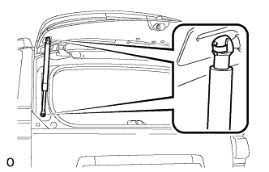

СТОЙКА ЗАДНЕГО ОКНА > УСТАНОВКА |
| 1. ВВЕРНИТЕ БОЛТ КРОНШТЕЙНА ДВЕРИ БАГАЖНОГО ОТДЕЛЕНИЯ |
При замене болта кронштейна двери багажного отделения:
Очистите резьбовую часть кузова растворителем, не содержащим смолистых веществ.
Вверните болт кронштейна двери багажного отделения.
При повторном использовании болта кронштейна двери багажного отделения:
Очистите резьбовую часть кузова растворителем, не содержащим смолистых веществ.
Нанесите герметик на резьбу болта кронштейна двери багажного отделения.
Вверните болт кронштейна двери багажного отделения.
| 2. УСТАНОВИТЕ ЛЕВУЮ СТОЙКУ ОКНА ДВЕРИ БАГАЖНОГО ОТДЕЛЕНИЯ В СБОРЕ |
Установите 2 стопорных кольца на кронштейн двери багажного отделения.
|  |
Установите стойку заднего стекла в сборе.
Убедитесь, что стойка заднего стекла вошла в зацепление с шаровыми шарнирами и не вытягивается.